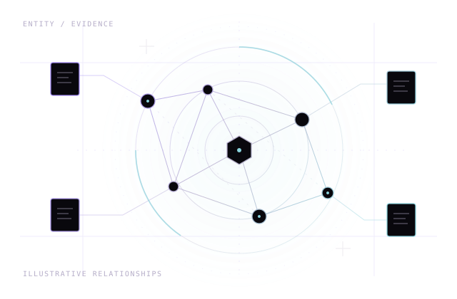

01 Project overview
SPECTRE
Local-First OSINT
Investigation Platform
A local-first approach to organizing investigations around cases, connected entities, and evidence.
Design focusCase scope. Evidence provenance. Passive-first workflows.
View Case Study: SPECTRE